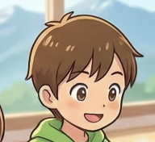
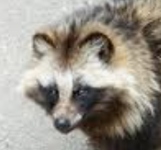
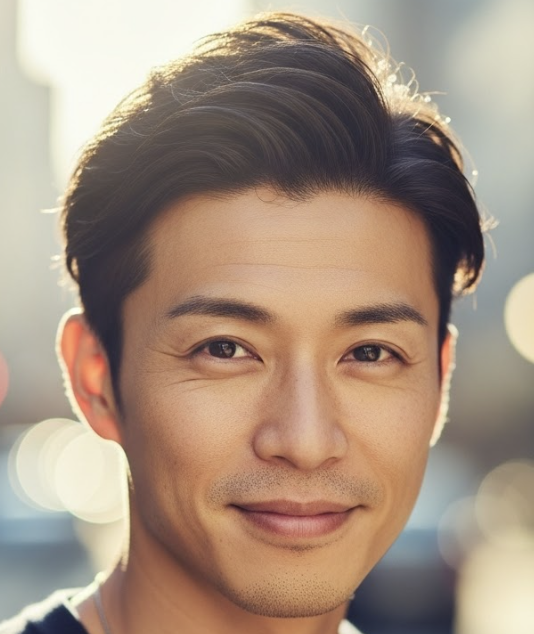

YouTubeの罠
なぜ気づいたら2時間たってるの？

でい太

ポン太
🎯 このレッスンでわかること
- ✓ なぜYouTubeを止められないか、しくみがわかる
- ✓ ユーチューバーとYouTubeの「本音」がわかる
- ✓ 時間を失うことの怖さがわかる
- ✓ 罠から抜け出すヒントがわかる
「あれ、もうこんな時間？」
「30分だけ見よう」と思って始めたのに、気づいたら夕ごはんの時間になっていた。
こんな経験、したことないかな？
❓ 考えてみよう
なぜ止められなかったんだろう？
意志が弱いから？ それとも、止められないような何かがあるから？
でい太
ユーチューバーの本音

ヒカケンジ兄さん
でい太
ヒカケンジ兄さん
サムネイルで引っかける
「絶対笑う」「衝撃の結末」「信じられない…」など、思わずクリックしたくなる言葉をサムネイルに入れる。クリックしないと気になって仕方なくなるように作ってあるんだ。
最初の30秒で離さない
「30秒以内に見るのをやめた人」はカウントされてしまう。だから動画の最初はとにかく引き込むように作ってある。
「つづきは次の動画で！」
大事なところをわざと途中で切って、次の動画も見たくなるようにする。気になってやめられなくなるんだ。
ヒカケンジ兄さん
YouTubeの本音
でい太
ヒカケンジ兄さん
動画が終わると自動で次が始まる
「終わった」と思ったら、もう次が始まっている。自分で選ぶ前に勝手に流れてしまうしくみ。
「あなたが好きそうな動画」だけ出てくる
今まで見た動画から「この人はこういうの好きだな」と予測して、つい見たくなる動画をずっと並べてくる。好きなものばかりだから止まれない。
「あと1本だけ」がくり返される
「これだけ見て終わり」と思っても、また次の気になる動画が出てくる。「あと1本」が何十回もくり返されるのが罠のしくみ。
📊 罠が深くなるしくみ
でい太
ポン太
失った時間は、戻らない
ここで少し考えてみてほしいことがある。
もし毎日2時間YouTubeに使っている時間を、別のことに使っていたら、1年後どうなってると思う？
1. スキー・スノーボード（スポーツの力）
毎日2時間（冬のシーズンに集中して、オフのトレーニングも含めて）練習したら、1年後にはどんな急な斜面でもカッコよく滑り降りて、ジャンプ台でクルッと回れるようになっているよ。
スケボーなら：1年後にはオーリーやノーリーが自由自在！
2. 英語（つながる力）
毎日2時間英語を楽しく学んだら、1年後には長野に遊びに来た外国人の観光客に、自分でおすすめの場所を英語で案内できるようになっているよ。
（「スノーモンキーはあっちだよ！」って教えてあげたらカッコいいね。）
3. イラスト・漫画（表現する力）
毎日2時間イラストを描き続けたら、1年後にはクラスのみんなが「これ本当に君が描いたの！？」と驚くような、プロみたいなキャラクターや漫画が描けるようになっているよ。
4. プログラミング（つくる力）
毎日2時間プログラミングを頑張ったら、1年後には自分だけのオリジナルゲームを完成させて、世界中の人に公開して遊んでもらえるようになっているよ。
（この「探検隊」みたいなサイトを自分で作ることだってできるかもしれないね！）
⚠️ 大事なこと
時間は、お金と違って取り戻せない。使ってしまったら、二度と戻らないんだ。
YouTubeを見て笑ったり楽しんだりすることは悪くない。でも、気づかないうちに奪われてしまうのは、話が別だよ。
でい太
ポン太
罠を知れば、抜け出せる
でい太
ヒカケンジ兄さん
✅ 罠から抜け出す3つのヒント
見る前に「何を・何分見るか」決める
「なんとなく開く」が一番危ない。目的を決めてから開こう。
自動再生をオフにする
動画が終わったら自分で選ぶ。流れに乗らないことが大事。
「あと1本だけ」と思ったら、それが罠のサイン
そのとき閉じられたら、罠から抜け出せたということだよ。
でい太
YouTubeをやめられなかったのは、意志が弱かったからじゃない。やめられないように作られていたから。でも、そのしくみを知った今のぼくたちは、自分で選べる。
それが、「考える力」だよ。」
ポン太
🖊 やってみよう
Q1. 「絶対笑う」「衝撃の結末」などのサムネイルは、何のためにあるの？（3択）
Q2. 動画が終わると自動で次が始まるのはなぜ？（3択）
Q3. 先週、合計どれくらいYouTubeを見た？正直に書いてみよう。
⏱ 時間のものさし
- 📖 1時間 ＝ 本が約3〜4章読める
- 👫 3時間 ＝ 友だちと思いっきり外で遊べる
- 🎨 5時間 ＝ 絵や工作の作品が1つ完成する
- 🏃 10時間 ＝ 新しいスポーツの基本が身につく
自分が書いた時間と比べてみてね。
Q4. 明日から1つ、じぶんでやってみることを書こう。
💬 こたえのれい
- 見る前に「今日は何を・何分見るか」決めてから開く
- 自動再生をオフにして、自分で次を選ぶ
- 「あと1本だけ」と思ったとき、そこで閉じてみる
- 見終わったあと「楽しかった？」「時間はよかった？」と自分に聞いてみる
保護者の方へ
このページで子どもに伝えた「サムネイルで引き込む手法」や「冒頭30秒で離脱させないテクニック」は、実際にYouTuberやマーケターが使っている技術です。より詳しく知りたい方向けに、参考ページをご紹介します。
煽りタイトル・煽りサムネイル撲滅へ！YouTubeが視聴者第一の改革に乗り出す
クリックベイト（煽り）手法の実態と、YouTubeが問題視し始めている背景を解説
note.com / Creators Palette
YouTubeは最初の30秒。離脱されないための4つの方法
動画冒頭30秒で視聴者を引き込み続けるための具体的なテクニックを解説
note.com / AIのある暮らし
10秒で視聴者を掴む動画の作り方｜離脱率激減！冒頭フック術の完全マニュアル
「結果先出し型」「衝撃映像型」など、視聴者を離さない冒頭パターンを詳細解説
techgym.jp
子どものYouTubeとの付き合い方 ─ 視聴ルール・自動再生をオフにする方法
家庭でできる具体的なルール作りと、自動再生をオフにする設定手順を紹介
note.com / 技術系Mom